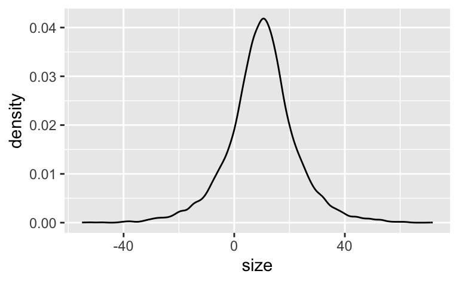

library(PupilPre) # installieren, einmalig, nicht vergessen
data("Pupildat")
d <-
Pupildat %>%
select(size = RIGHT_PUPIL_SIZE,
time = TIMESTAMP) %>%
mutate(size = size / 100) # in millimeterpupil-size
probability
bayes
regression
string
computer
Aufgabe
Pupillendaten sind ein verbreiteter Analysegegenstand in Bereichen wie Psychologie, Marktforschung und Marketing.
Betrachten wir dazu ein R-Paket (zum Vorverbarbeitung, preprocessing) und einen Datensatz der Uni Münster.
Mit dem R-Paket eaystats kann man sich bequem typische Statistiken ausgeben lassen. Aber natürlich können Sie auch mit summarise(mw = mean(size)) o.Ä. arbeiten.
library(easystats)
d %>%
describe_distribution()| Variable | Mean | SD | IQR | Min | Max | Skewness | Kurtosis | n | n_Missing |
|---|---|---|---|---|---|---|---|---|---|
| size | 1.000562e+01 | 5.107151e+00 | 3.88 | 1.04 | 25.01 | 1.2474408 | 0.3199426 | 45343 | 1607 |
| time | 2.990837e+06 | 9.874538e+05 | 1947161.00 | 1443974.00 | 4062110.00 | -0.4111739 | -1.6982498 | 46950 | 0 |
Wir verzichten hier auf eine Aufbereitung der Daten (was eigentlich nötig wäre, aber nicht Gegenstand dieser Übung ist). Stattdessen konzentrieren wir uns auf die Posteriori-Verteilung zur Pupillengröße.
Wir sind also interessiert an einem Modell zur Schätzung der (Verteilung der) Pupillengröße; die Posteriori-Verteilung bildet das ab.
Aufgaben:
Formulieren Sie ein passendes Modell.
Verteidigen Sie Ihre Modellspezifikation.
Simulieren Sie Daten aus der Priori-Verteilung. Kritisieren Sie die Wahl der Priori-Werte.
Berechnen Sie die Posteriori-Verteilung mit den Pupillendaten
d. Geben Sie zentrale Statistiken an.Geben Sie ein 95%-Intervall für die mittlere Pupillengröße an auf Basis der Posteriori-Verteilung.
Geben Sie die Prioris an, die
rstanarmverwendet hat.
Hinweise:
- Verwenden Sie die Defaults von
rstanarmfür Ihr Modell. - Falls Sie Teile der Aufgabe nicht lösen können, weil Ihnen der Stoff dazu fehlt: Einfach ignorieren 😄.
Lösung
- Modelldefinition
\[\begin{aligned} s_i &\sim \mathcal{N}(\mu, \sigma)\qquad \text{| s wie size }\\ \mu &\sim \mathcal{N}(10, 5)\\ \sigma &\sim \mathcal{E}(.2) \end{aligned}\]
- Begründung der Modellspezifikation
\(s_i\): Pupillengrößen sind normalverteilt, da viele Gene additiv auf die Größe hin zusammenwirken
\(\mu\): Da wir nicht viel wissen über die mittlere Pupillengröße, entscheiden wir uns für Normalverteilung für diesen Parameter, da dies keine weiteren Annahmen (außer dass Mittelwert und Streuung endlich sind) hinzufügt. Ein Modell mit wenig Annahmen nennt man “sparsam” oder konservativ. Es ist wünschenswert, dass Modelle mit so wenig wie möglich Annahmen auskommt (aber so vielen wie nötig).
\(\sigma\): Die Streuung muss positiv sein, daher kommt keine Normalverteilung in Frage. Eine Exponentialverteilung ist eine von mehreren denkbaren Verteilungen.
Aber welche Werte von lambda kommen in Frage? Probieren wir mal etwas aus:
qexp(p = .5, rate = 1)[1] 0.6931472Mit \(\lambda = 1\) liegt der Median der Streuung der Pupillengrößen (p = .5) bei ca. 0.7 mm. Dieser Wert erscheint mir etwas wenig
qexp(p = .5, rate = 0.2)[1] 3.465736Hm. Eine Streuung von ca. 3.5mm um den Mittelwert herum; das könnte passen.
Die große Stichprobe wird den Priori-Wert vermutlich überstimmen.
- Priori-Prädiktiv-Verteilung
n <- 1e4
sim_prior_pred <-
tibble(
mu = rnorm(n, mean = 10, sd = 5),
sigma = runif(n, min = 0, max = 20),
size = rnorm(n, mu, sigma)
)
sim_prior_pred %>%
ggplot(aes(x = size)) +
geom_density()
Da es viele negative Pupillengröße-Werte gibt, sieht man deutlich, dass das Modell nicht gut spezifiziert ist. So könnte kleinere Streuungswerte zu einem realistischeren Modell führen. Oder man verwendet Verteilungen, die rein positiv sind (hier nicht weiter ausgeführt).
- Berechnen Sie die Posteriori-Verteilung.
Die Modelle wie stan_glm() tun sich leichter, wenn man nur die relevanten Daten, ohne fehlende Werte und schon schön fertig vorverarbeitet, zur Analyse in die Modellberechnung gibt:
d3 <-
d %>%
select(size) %>%
drop_na()Die Posteriori-Verteilung kann man mit dem Paket {rstanarm} d.h. mit der Funktion stan_glm() berechnen:
library(rstanarm)
m_pupil <- stan_glm(size ~ 1,
data = d3,
seed = 42,
refresh = 0)Die Daten sind groß, es kann ein paar Sekunden brauchen…
Hier ist eine nützliche Zusammenfassung der Post-Verteilung.
parameters(m_pupil)| Parameter | Median | CI | CI_low | CI_high | pd | Rhat | ESS | Prior_Distribution | Prior_Location | Prior_Scale |
|---|---|---|---|---|---|---|---|---|---|---|
| (Intercept) | 10.00556 | 0.95 | 9.958776 | 10.05205 | 1 | 1.000263 | 1991.503 | normal | 10.00562 | 12.76788 |
Hier eine Visualisierung der Parameter:
plot(parameters(m_pupil), show_intercept = TRUE)
Natürlich kann man auch die Post-Verteilung plotten (z.B: HDI):
m_hdi <- hdi(m_pupil, ci = c(0.5, 0.95))
plot(m_hdi, show_intercept = TRUE) # Im Default wird der Intercept nicht gezeigt
Hier zur Info die ersten paar Zeilen des Post-Verteilung:
| (Intercept) | sigma |
|---|---|
| 10.04 | 5.13 |
| 10.00 | 5.07 |
| 9.99 | 5.08 |
| 10.00 | 5.08 |
| 9.99 | 5.11 |
- Geben Sie ein 95%-Intervall für die mittlere Pupillengröße an auf Basis der Posteriori-Verteilung.
eti(m_pupil)| Parameter | CI | CI_low | CI_high | Effects | Component |
|---|---|---|---|---|---|
| (Intercept) | 0.95 | 9.958776 | 10.05205 | fixed | conditional |
Und dann erstellen wir noch ein 89%-PI, einfach zum Spaß an der Freude:
eti(m_pupil, ci = .89)| Parameter | CI | CI_low | CI_high | Effects | Component |
|---|---|---|---|---|---|
| (Intercept) | 0.89 | 9.966516 | 10.04339 | fixed | conditional |
- Geben Sie die Prioris an, die
rstanarmverwendet hat.
Voilà:
prior_summary(m_pupil)Priors for model 'm_pupil'
------
Intercept (after predictors centered)
Specified prior:
~ normal(location = 10, scale = 2.5)
Adjusted prior:
~ normal(location = 10, scale = 13)
Auxiliary (sigma)
Specified prior:
~ exponential(rate = 1)
Adjusted prior:
~ exponential(rate = 0.2)
------
See help('prior_summary.stanreg') for more detailsCategories:
- probability
- bayes
- regression
- string